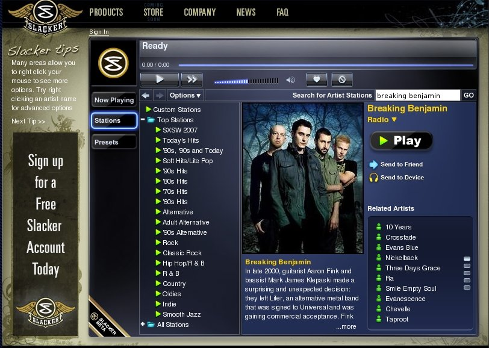

Slacker - Taking Internet Radio on the road
Today at SXSW, Slacker will be launched. Slacker is an online radio, similar to Pandora - type in the names of a few artists that you like and Slacker will feed you a continuous stream of music related to those artists. Nothing new here so far, many folks have been doing the same thing for years. The novel thing that Slacker is bringing to the table is that they will let you take Internet Radio on the road.
This summer
Slacker will be releasing an iPod-like device (yes, real hardware) that
will allow you to sync up and take an Internet Radio station on the
road. The device will presumably enforce the same rules that we
have with Internet radio - no playing a song or artist on demand, no
unlimited song skipping. Engadet describes the device as such: Slacker will provide a internet radio network that won't just reach you
via browser, but will also stream to a Slacker portable by way of WiFi
and -- get this -- satellite service. The Slacker player, which will feature a massive 4-inch screen with
scrolling touch strip and debut this summer in varying capacities
between 2, 4, and 8GB up to 120GB for between $150 and $350, will have
track metadata via AMG, and gobbles up and plays back audio content via
WiFi and USB (with tracks purchasable for $1). The satellite part comes
into play with a docking station at home or in the car, so you can get
Slacker content while on the move or if you're out of range of internet
access.
Right now, slacker is in beta, and only the free, web radio is live. The web radio, according to Forbes, will use (gulp!) audio ads (something that Pandora experimented with and very quickly abandoned). The web player is rather slick, and easy to use. However, the music choices it made were rather pedestrian. I'm guessing that they rely on All Music's similar artist data to drive their radio stations, which give serviceable recommendations, but lacks the subtlety and aha! factor of Pandora or last.fm. Right now I am listening to 'The Nice' radio, which should be filled with raucous Hammond B3 and bad vocals, but instead I'm hearing a rather pedestrian selection of the Beatles, Cream and Traffic (yawn!). Pandora, on the other hand, knows that The Nice has a 'electric rock instrumentation with prominent organ' (prominent organ indeed!) and plays similar sounding tracks. Last.fm, with its social recommender offers a track by Renaissance that I've never heard before, but sounds like it could have been recorded by the Nice. Now that's what a good music recommender should do.
Slacker is in beta, and their Big Idea, taking Internet Radio on the road is not ready yet, so we'll cut them some slack ;) - but I hope they learn that the key to good Internet radio is interesting and highly relevant music recommendations.


Posted by DB on March 20, 2007 at 01:17 AM EDT #